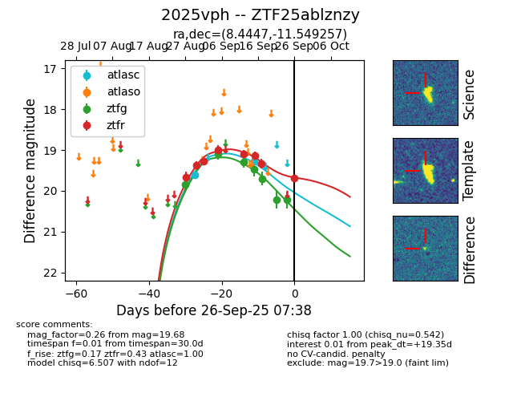
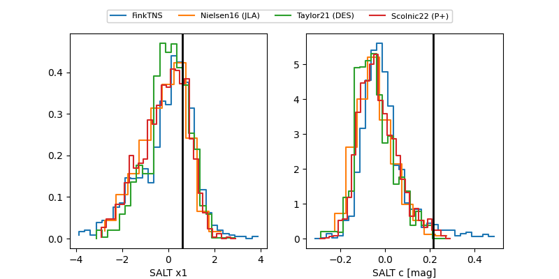

FINK: ZTF25ablznzy
Lasair: ZTF25ablznzy
ALeRCE: ZTF25ablznzy
TNS: 2025vph
YSE: 2025vph
ZTF25ablznzy (ztf,fink)
2025vph (tns,yse)
equatorial (ra, dec) = (8.4447,-11.54926)
galactic (l, b) = (107.1724,-73.87827)


last atlasc=19.26, ztfg=20.23, ztfr=19.68
2 atlasc, 7 ztfg, 8 ztfr detections